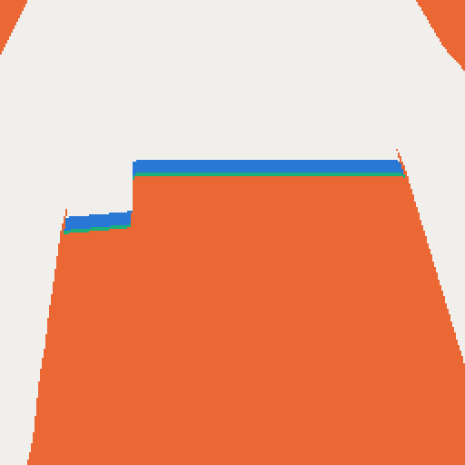
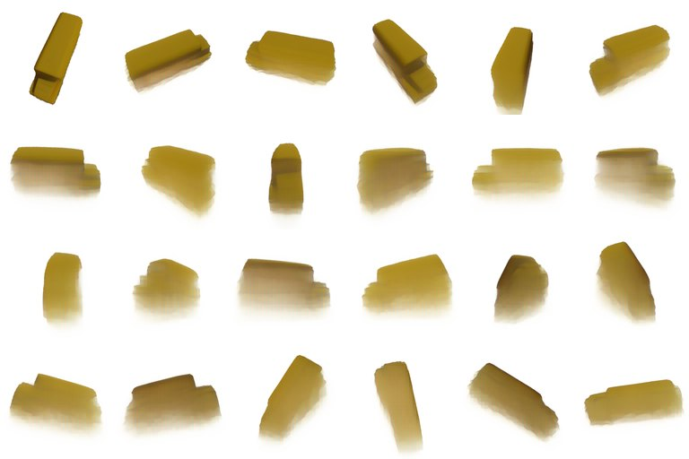

Abstract
A camera moving around an object should yield a complete 3D asset after every frame that only gets better as frames arrive. Recent methods condition a frozen image-to-3D generator on the stream and regenerate the asset, or refine its latent; either way every observation passes through the generator's coarse latent, which caps the fidelity of what has already been seen. We take the opposite route. FuseGen keeps an explicit persistent state that integrates every RGB-D frame exactly, a truncated signed distance field with free, surface and unknown labels plus Gaussians fitted online, and asks a generative model only about the space no camera has constrained yet. That completion comes from a test-time-trained view-synthesis model whose ring of novel-view silhouettes carves the unknown region; it is re-queried every few frames and confined to unknown voxels, so generated content never overrides an observation. On Stream3D's 30-object GSO benchmark, with the same cameras and depth for every method and the benchmark evaluator's mirrored ground-truth basis corrected, FuseGen ends the stream at 21.2 dB PSNR against 16.9–17.0 dB for Stream3D and multi-view regeneration, halves their Chamfer distance, leads in geometry and PSNR from the first scored frame, and costs 0.32 s per frame, a 47th of Stream3D's; with the benchmark's estimated depth, whose scale it recovers from the cameras, it still leads from mid-stream by 0.9–1.6 dB. Ground-truth cameras and masks; one seed; synthetic renders.
Why not keep the generator in the loop?
Image-to-3D generators turn one view into a complete asset in seconds. Streaming methods keep the generator in the loop: they regenerate the asset from a memory of frames, or refine its latent in place. Then every observation, even one that already pins the surface down exactly, is routed through the generator's coarse latent. Early in the stream that is the right call, because most of the object is unseen. Late in the stream it is a burden, because the generator re-draws what the cameras have already measured.
Probes on the 10 development objects (depth rasterised from the ground-truth mesh).
So we separate the two jobs. Reconstruct what has been seen: fuse it exactly. Generate what has not: only there, and only until a camera gets to see it.
Method at a glance
FuseGen carries three things from frame to frame. An evidence grid and a set of observed Gaussians hold everything observed so far. A completion covers the space no camera has observed. Every new frame is fused into the first two. Every few frames, the completion is recomputed from a sample of the frames so far. Whenever an output is requested, the three are composed into a mesh and a set of Gaussians. Click a block to jump to its step.
Scroll sideways for the whole diagram →
Try it: FuseGen in 2D
The whole method fits in a flat world. Below, a camera (black dot) circles a 2D object, starting from above, and each frame gives a 1D depth image. The page runs the method's rules on a 96 × 96 grid while you watch: the TSDF update, the four labels, carving by a ring of virtual views, and composition by label. Scrub the frame, switch the stage, and hover a cell to read its state.
- frame
- 7
- unknown share of the hull
- –
- completion computed at
- –
- generated share of the output
- –
- output error (Chamfer ×100)
- –
The toy's view-synthesis model is a stand-in: the true shape, inflated and warped by an error that shrinks as more of the surface has been observed. The real LaCT renders are shown in step 3 below. Try the cup: silhouettes cannot carve a concavity, so until a camera looks into the cup (from about frame 25) the completion closes it with a lid; the camera then measures the inside as free and the output opens. With completion: none, all unknown space is filled and the early output is a long shadow.
The setting
A camera moves around a single object. At time t it delivers an RGB image It, an object mask Mt, a depth map Dt and the camera parameters. After each frame the method must output a complete model of the object (3D Gaussians for rendering, a mesh for geometry) using only frames 0…t. The task has two regimes. Early, most of the object is unseen, and a good output needs a prior that can guess the rest. Late, most of the surface has been measured, and a good output must keep those measurements exactly.
1Reconstructing what has been seen: the evidence grid
The observed geometry lives in a truncated signed distance field (TSDF), a 256³ voxel grid around the object. Each voxel x stores its signed distance d(x) to the observed surface. When a frame arrives, every voxel is projected into the image. If it lands at a pixel with measured depth Dt(u) and lies at depth z, the measured distance is s = Dt(u) − z. Voxels inside a narrow band |s| ≤ τ update a running average:
Up to a cap of 64 observations per voxel, this average is the least-squares estimate of the truncated distance from all frames that saw the voxel (a voxel in front of the band that the band once reached is updated with the truncation value, +1). With measured depth, the grid therefore summarises the entire depth history in constant memory: the TSDF is never re-optimised, re-encoded or replayed (the observed Gaussians below, by contrast, revisit earlier frames).
What is known, and what is not. Every voxel also collects evidence of being empty: a ray that passes through it before the measured surface, or a projection outside the object mask. From this evidence each voxel gets one of four labels: surface (on a measured surface), free (some camera has seen through it), behind (just behind a measured surface, inside the object), and unknown (no camera has constrained it). The unknown voxels are exactly the space the observations say nothing about, and they are the only space a completion may fill.

2Appearance: observed Gaussians, fitted online
The appearance of the observed surface is held by 3D Gaussians: small, coloured, semi-transparent ellipsoids that render quickly from any camera. We grow and fit them online, as Gaussian SLAM systems do, except that our cameras are given. For each new frame, Gaussians are added at the pixels the current set does not explain (missing coverage, wrong depth or wrong colour) and are placed in 3D with the measured depth. A few optimisation steps then fit all Gaussians to the new frame and to randomly chosen earlier frames:
Î, Â and D̂ are the rendered colour, opacity and depth. The halo term penalises rendered opacity outside the object, which keeps the Gaussians from spilling beyond its silhouette. Gaussians that end up in free space or outside a seen silhouette are removed. No network is trained or fine-tuned: LaCT below is used as released (its test-time update of the fast weights is part of the released model). With measured depth and the LaCT completion, this per-stream fit of the observed Gaussians, with a least-squares refit of their colours at output, is the only optimisation FuseGen adds.
3Generating what has not been seen
The unknown voxels need a prior. We take it from LaCT, a novel-view synthesis model: given posed images of an object, it renders the object from any new camera. LaCT builds no explicit 3D model. It writes the input images into its fast weights, a large part of the network, with a single test-time gradient update, and renders a new view by querying them with the new camera. Because it is trained on a large collection of 3D objects, it renders plausible images even of sides no input image shows. We use the released model as is.
From novel views to shape. A rendered view tells us where the object is not. If a pixel shows background, the ray through it crosses only empty space. At each completion step, LaCT encodes up to 32 frames sampled uniformly from those seen so far and renders a ring of 24 views around the object. Space not measured as surface (unknown or behind) that projects onto background in any of these views, or in any input frame, is removed, except right next to a measured surface. This is classical space carving, except that most of the images are synthesised rather than captured. We compute it as a continuous field rather than voxel by voxel: every point gets, in each view, the distance from its projection to the silhouette edge, taken in 3D, and the views are combined with a soft minimum. The field's zero level is the completed surface, smooth rather than a staircase of voxels. Its colours come from the rendered views.

Why this completion fits the state.
- It is born in the stream's frame. LaCT renders from cameras in the stream's own world frame, so the completion lands exactly where the observations are. A 3D generator produces an object in its own canonical frame, which must then be registered to the observations, at the risk of a wrong scale, rotation or mirror image.
- It can only remove unmeasured space. Carving only removes space, never a measured surface or the voxels right next to it, and the composite keeps the space just behind a measured surface inside. So the completion can neither place surface where a camera has seen empty space nor remove a measured surface.
Refreshing the completion. As frames arrive, LaCT sees more of the object and the unknown region shrinks. We recompute the completion when enough new information has arrived, at least four frames apart: every four to six frames early in the stream and less often later, 14 times per 80-frame stream on average. Each time LaCT re-encodes up to 32 frames sampled from all frames so far, and the new completion replaces the old one. Between two refreshes, newly observed space simply takes precedence.
4Composing the output
When an output is requested, observed and generated geometry are merged voxel by voxel, according to the labels:
| +1 | free | free space stays empty |
| w d(x) + (1 − w) dgen(x) | surface | measured surface from the TSDF (w = ½ after one measurement, 1 after two) |
| min(dgen(x), −ε) | behind | just behind a measured surface is inside |
| dgen(x) + r(x) | unknown | the generated shape, shifted to join the measured surface without a step |
The output mesh is the zero level set of D, extracted with marching cubes. The output Gaussians are the observed Gaussians plus generated ones laid densely on the unknown part of that surface, flat along it and coloured from LaCT's views, so mesh and Gaussians describe the same shape. By construction, no output surface lies in space a camera has seen to be empty: none of the 120 outputs of our benchmark run has any surface more than one voxel inside observed free space.
Observed only: every unknown voxel filled (orange)
Completion: LaCT's carved hull
Composite: measured + generated
Predicted depth
When a network predicts the depth from the images instead of it being given exactly (as in the main comparison), it is right only up to a scale factor, which is unknown and changes from frame to frame. The cameras resolve this. Only at the correct scale does a frame's depth agree with the depth and silhouettes of the other frames, and the known distances between camera positions fix the absolute scale. After every frame FuseGen estimates one scale per frame with a scale-only bundle adjustment, rebuilds the evidence grid when the scales change, and lets frames or pixels that still disagree contribute only their silhouettes and colours. With the benchmark's own predicted depth (19 objects), FuseGen leads Stream3D from mid-stream on: at frame 79, median Chamfer 0.039 vs 0.044 and 18.5 vs 17.5 dB PSNR. At frame 7 its geometry and PSNR are ahead but its LPIPS and SSIM behind, and one of the 19 objects fails.
Results
This is Stream3D's 30-object GSO benchmark: 80 frames per stream, scored after frames 7, 31, 55 and 79 on held-out views. Every method gets the same ground-truth cameras, masks and depth (latent refinement is also registered once to the ground-truth mesh, which favours it). The evaluator's mirrored ground-truth basis is corrected, and the paper reports the released evaluator too. Baselines run on the same frozen generator, SAM 3D.
| Method | CD mean ↓ | CD median ↓ | IoU ↑ | PSNR ↑ | SSIM ↑ | LPIPS ↓ | s / frame ↓ |
|---|---|---|---|---|---|---|---|
| SAM 3D, single view | 0.0652 | 0.0537 | 0.797 | 16.47 | 0.866 | 0.147 | 4.99 |
| MVSAM3D, 8 random views | 0.0550 | 0.0388 | 0.828 | 17.02 | 0.867 | 0.135 | 14.39 |
| Stream3D (released code) | 0.0566 | 0.0424 | 0.801 | 16.89 | 0.871 | 0.134 | 15.12 |
| Latent refinement | 0.0516 | 0.0327 | 0.844 | 16.95 | 0.866 | 0.138 | 0.45 |
| FuseGen, LaCT completion | 0.0268 | 0.0241 | 0.920 | 21.20 | 0.925 | 0.083 | 0.32 |
| FuseGen, SAM 3D completion | 0.0265 | 0.0243 | 0.931 | 21.21 | 0.927 | 0.081 | 0.79 |
What each part does
Ablations on the 10 development objects: registration-free Chamfer-L1 (×100) and PSNR at frames 7, 31 and 79.
| Variant | CD 7 | CD 31 | CD 79 | PSNR 7 | PSNR 31 | PSNR 79 | s / frame |
|---|---|---|---|---|---|---|---|
| FuseGen (full) | 2.72 | 0.77 | 0.09 | 16.53 | 19.59 | 20.61 | 0.32 |
| no completion (fill all unknown) | 13.13 | 4.09 | 0.09 | 11.42 | 15.22 | 21.43 | 0.24‡ |
| SAM 3D completion instead of LaCT | 3.74 | 1.12 | 0.24 | 16.14 | 19.30 | 21.37 | 0.78 |
| fusion only (point splats + TSDF) | 5.57 | 1.65 | 0.09 | 14.80 | 18.61 | 19.25 | 0.01 |
| fusion + post-hoc Stream3D fill | 5.20 | 1.22 | 0.45 | 15.65 | 18.31 | 18.40 | > 15 |
‡ Timed on a GPU shared with other jobs.
Without a completion, the Chamfer error at frames 7 and 31 is 4.8 and 5.3× higher: the prior is what makes the early stream work. A 3D generator as the completion gives less accurate geometry on these objects (37 %, 45 % and 2.7× higher registration-free Chamfer error at frames 7, 31 and 79; it must be registered to the stream) and sharper colours only at the end (−0.4, −0.3 and +0.8 dB PSNR at frames 7, 31 and 79), at 2.4× the cost; on all 30 objects, scored after the evaluator's fitted similarity, the two completions are level at frame 79. Plain fusion is exact late, but cannot complete the object early.
Limitations
- Every method receives ground-truth cameras and masks. The main comparison also uses exact depth; with predicted depth the lead shrinks to 0.9–1.6 dB PSNR from mid-stream on.
- One seed, synthetic renders of scanned objects: no real captures yet.
- Early in the stream the colours of the unseen side are blurry, because they come from LaCT's renders: SSIM at frame 7 is slightly below the baselines'.
- Carving cannot see into concavities that no camera has looked into; those stay filled until observed.
- With predicted depth, LPIPS and SSIM at frame 7 fall behind the baselines' and one of the 19 objects fails; the scale search and the depth gates were added after a first run on these objects, and a guard against a degenerate scale solution after a test with telephoto cameras.
- Every setting of the main configuration was chosen on 10 of the 30 objects; the other 20 show the same margins (with predicted depth, so do the 13 of the 19 objects outside those 10).
Citation
@inproceedings{fusegen2027,
title = {Reconstruct What You See, Generate What You Don't:
Streaming 3D Object Reconstruction with an Exact Evidence State},
author = {Anonymous},
booktitle = {CVPR (under review)},
year = {2027}
}